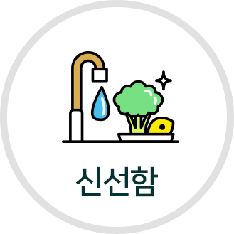
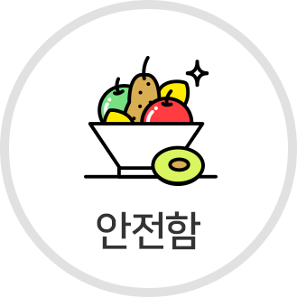
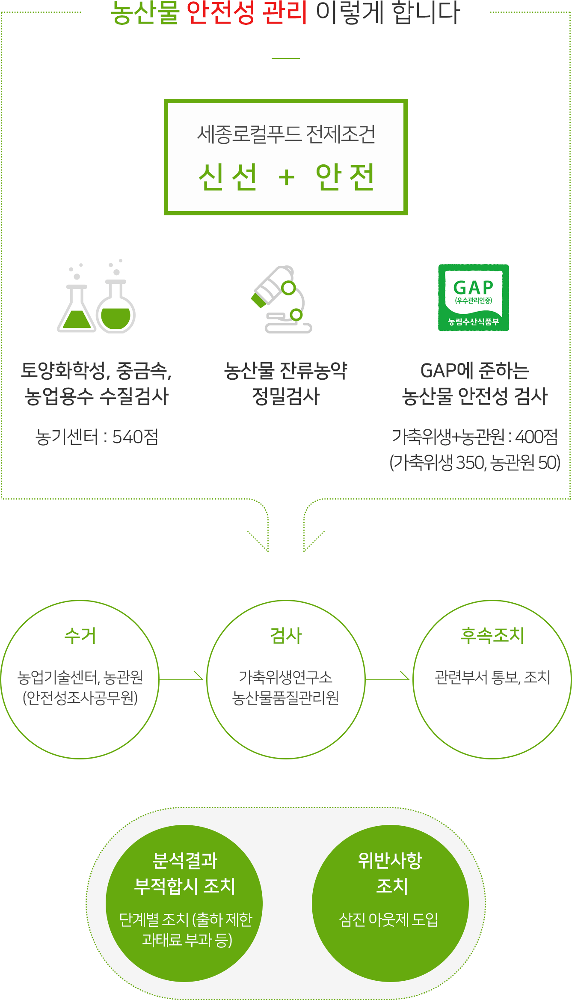

싱싱장터에 가면
“믿고 먹는 우리 지역 농산물이 있어요.”
요즘처럼 먹거리에 대한 불신이 고조되어 있는 지금, 안전하고 신선한 먹거리를 싱싱장터에 오시면 만나실 수 있습니다. 내 자식, 내 손자손녀가 먹는다는 마음으로 농사를 지으시는 농민의 마음을 바탕으로 1년 365일 합리적인 가격을 시민에게 제공하는 것이 싱싱장터의 기본입니다.
- 
- 
세종로컬푸드 주식회사와 참여농가는 다품목 소량 생산체계를 구축하여 신선한 농산물이 공급될 수 있도록 당일 수확 포장하여 출하하고 진열기간을 지킵니다.
| 품목 | 종류 | 진열기간 |
|---|---|---|
| 콩나물 | 콩나물 | 1 |
| 두 부 | 두부 | 2 |
| 계란류 | 계란 | 1 |
| 엽채류 | 전체 | 1 |
| 경.양채류 | 고구마줄기, 머위대, 대파, 쪽파, 양배추, 브로콜리 |
2 |
| 과채류 | 일반 | 2 |
| 늙은호박, 단호박, 땅콩호박 | 30 | |
| 과일류 | 일반 | 2 |
| 메론 | 5 | |
| 냉장(밤, 생대추) | 5 | |
| 근채류 | 일반 | 3 |
| 냉장(깐마늘, 깐양파, 깐대파) | 2 | |
| 고구마, 감자, 양파, 건마늘, 도라지 | 5 | |
| 냉장(인삼) | 5 | |
| 곡류 | 쌀(도정일) | 7 |
| 잡 곡 | 30 | |
| 건물류 | 건나물류 | 30 |
| 건약재류 | 30 | |
| 버섯류 | 전 체 | 2 |

착한 가격의 농산물을 만납니다.
판매가격은 전년도 평균 소매가격, 작황, 타 로컬푸드 매장 등의 공신력
있는 유통시장 가격을 고려하여 가격조정위원회 및 품목별 가격 협의회를
통해 결정하며, 회사와 생산자가 협의한 필수 품목에 대해서는 연중 균등
가격제를 원칙으로 합니다.
(단, 가온 품목은 동절기와 하절기를 구분 할 수 있습니다.)